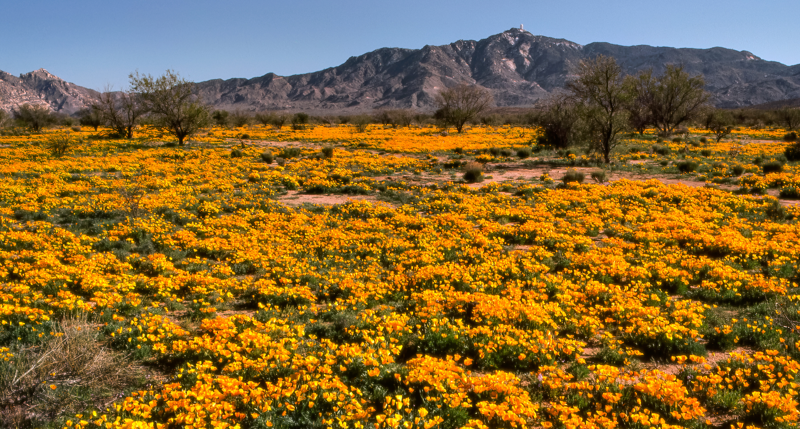
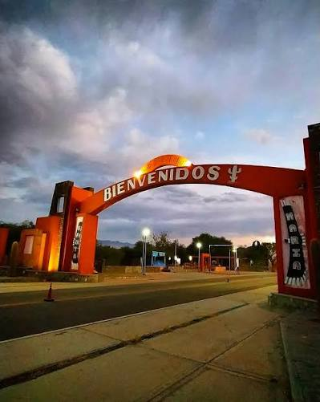
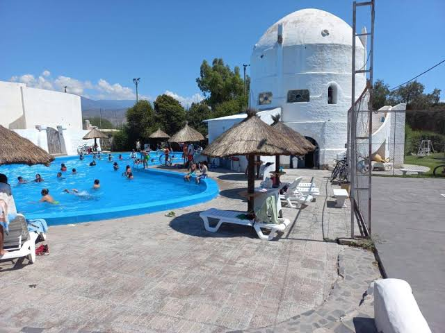
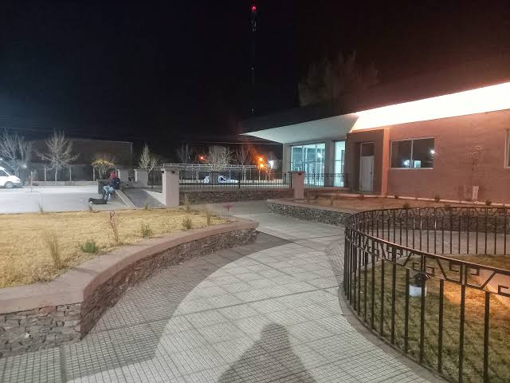
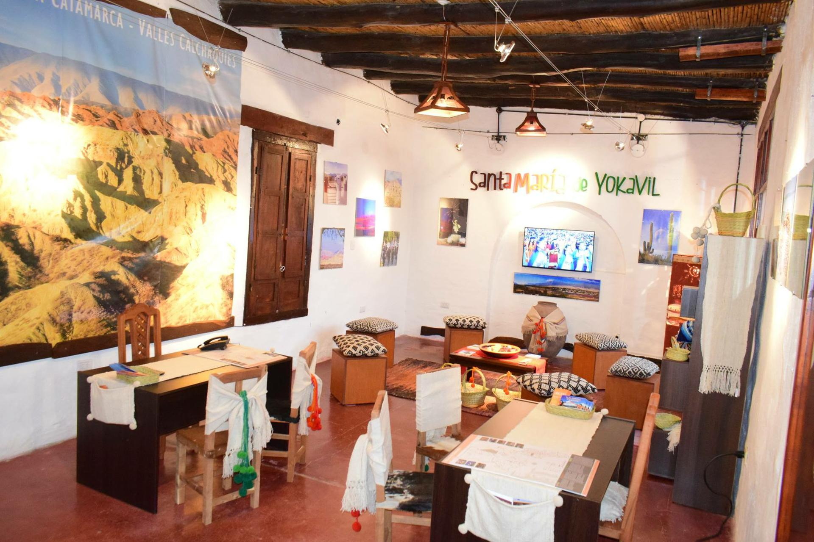
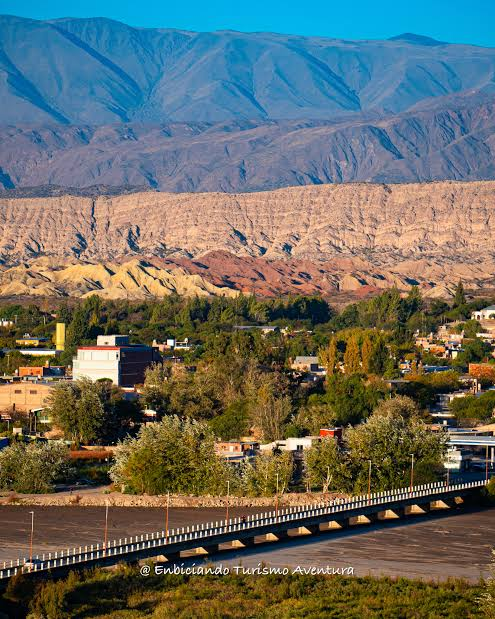

Transporte público
La información municipal reúne referencias de transporte urbano y de larga distancia. Confirmá líneas, horarios y puntos de salida directamente antes de viajar.
Guía turística · Valle de Yokavil
Una guía práctica para preparar el viaje, orientarte al llegar y disfrutar el Valle de Yokavil a tu manera.


01 · Planificá el recorrido
Santa María se encuentra en el este de Catamarca, sobre el corredor de la Ruta Nacional 40. El mapa rutero y urbano municipal también señala conexiones por la Ruta Provincial 17 hacia Amaicha del Valle y Quilmes.
Desde otras provincias podés llegar en vehículo particular o en ómnibus de larga distancia. La Municipalidad publica información de empresas y puntos de salida en la Terminal; recorridos, frecuencias y disponibilidad pueden cambiar, así que conviene confirmarlos antes de viajar.
02 · Encontrá tu lugar
En Santa María y sus alrededores hay distintas modalidades para organizar la estadía. Elegí según el tipo de viaje, la ubicación que te conviene y los servicios que necesitás.
El directorio provincial reúne alojamientos habilitados por localidad. Consultá allí los datos vigentes y contactá cada establecimiento para confirmar tarifas, disponibilidad y condiciones.

03 · Moverse por el valle
Las alternativas dependen del destino y del día. Consultá los canales oficiales y verificá horarios, recorridos y disponibilidad antes de salir.

La información municipal reúne referencias de transporte urbano y de larga distancia. Confirmá líneas, horarios y puntos de salida directamente antes de viajar.
Para traslados dentro de la ciudad o hacia localidades cercanas, consultá el directorio municipal y acordá previamente recorrido y tarifa.
Las visitas y actividades pueden requerir reserva o coordinación previa. Consultá guías habilitados y disponibilidad para cada salida.
04 · Referencias para tu estadía
Algunos directorios y servicios se actualizan con frecuencia. Para confirmar horarios, contactos y ubicaciones, consultá las fuentes oficiales antes de necesitarlos.

El municipio publica tres puntos de atención. En el Centro Cultural Yokavil informa ubicación en Sarmiento y Belgrano y teléfono 03838-421083. Confirmá días y horarios antes de acercarte.
Ubicaciones y datos publicados ↗El mapa urbano municipal identifica el hospital. Para atención, guardias y teléfonos vigentes, verificá directamente con los servicios locales.
Consultar mapa municipal ↗Consultá el listado municipal para revisar direcciones y teléfonos; confirmá turnos y atención antes de ir.
Ver listado de farmacias ↗El mapa municipal indica la ubicación de un banco. Verificá entidades, cajeros y servicios disponibles, ya que la referencia cartográfica puede cambiar.
Mapa rutero y urbano ↗El mapa municipal señala puntos de combustible. Antes de recorrer distancias largas, confirmá disponibilidad y planificá las paradas.
Consultar mapa municipal ↗Dirección de Turismo: (03838) 421870 · Calle Piriqui Pérez, Complejo El Mirador. Correo: secturismosantamariared@gmail.com. Confirmá los contactos de emergencia con fuentes oficiales locales.
Fuente municipal y canales de contacto ↗
05 · Elegí tu momento
El valle se puede recorrer durante todo el año. La experiencia cambia con la estación y con la agenda local; antes de definir las fechas, revisá el pronóstico y consultá si las actividades que te interesan requieren coordinación previa.
Priorizá protección solar, agua y ropa cómoda. Consultá el estado de caminos y actividades antes de salir.
Sumá capas livianas para adaptarte a los cambios de temperatura entre distintos momentos del día.
Llevá abrigo y verificá el pronóstico y las condiciones de las rutas con anticipación.
Elegí prendas versátiles y revisá la agenda local para acompañar tu visita con actividades disponibles.
06 · Últimos preparativos
Unos minutos de planificación ayudan a disfrutar el recorrido con más tranquilidad. Guardá estas comprobaciones para hacerlas cerca de la fecha del viaje.
Portal oficial de Catamarca Transporte ↗